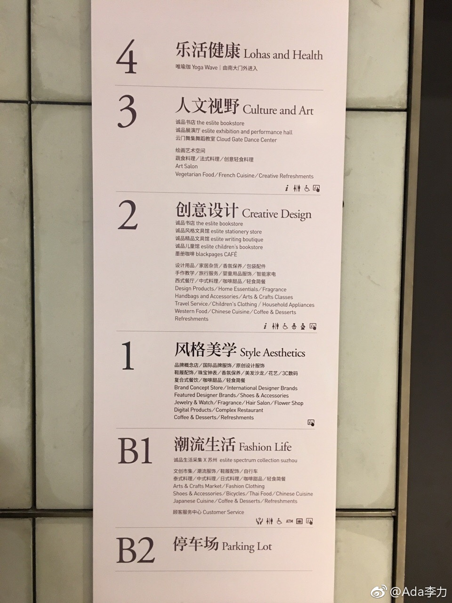

最早知道诚品书店是前同事Alex Peng推荐的，一起去台湾出差做技术推广时，他不但自己大半夜两点去逛过，还带一帮同事白天又逛了一趟。
在清华创新大厦上班时，附近的万圣书园也是他推荐的。自己去看过，出版社合作伙伴也约过那里。但是一直无感，也不清楚为什么这家书店会这么出名。
听说苏州诚品生活是大陆唯一，逛了后，觉得以后有机会可以带姣姣来，她或许会喜欢。而我更加确认自己不是文艺青年啦。
有文艺青年同事还是很不错滴。
在清华创新大厦上班时，附近的万圣书园也是他推荐的。自己去看过，出版社合作伙伴也约过那里。但是一直无感，也不清楚为什么这家书店会这么出名。
听说苏州诚品生活是大陆唯一，逛了后，觉得以后有机会可以带姣姣来，她或许会喜欢。而我更加确认自己不是文艺青年啦。
有文艺青年同事还是很不错滴。

- 